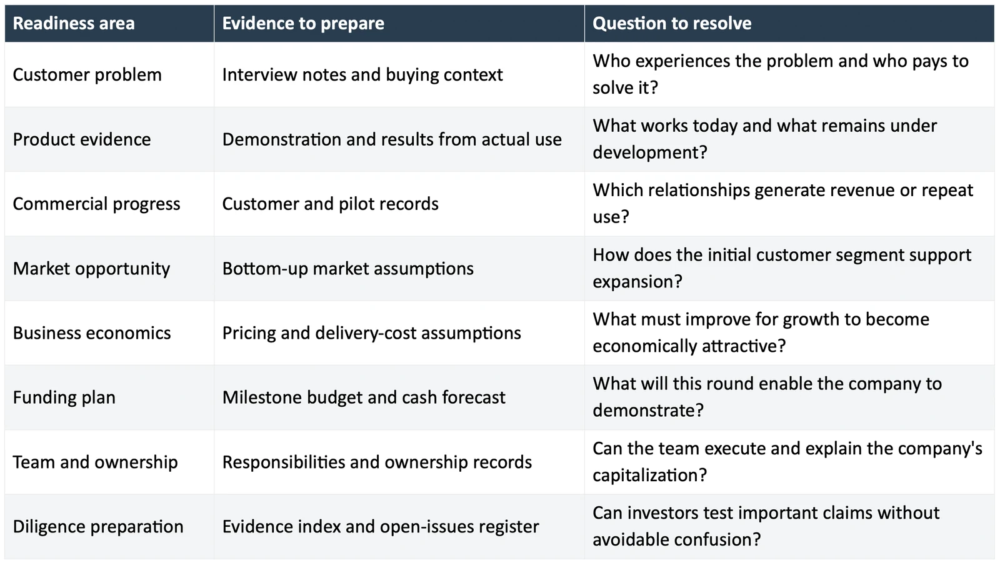

Investment readiness is a startup's ability to support its funding case with credible evidence, explain how new capital will create progress, and give investors enough information to evaluate the opportunity. For a seed round, that means showing what you have learned, what remains uncertain, and why the next stage of the business deserves funding.
A pitch can open a conversation. The questions that follow determine whether the conversation advances. Who is paying? Why do customers return? What does the company actually own? Which milestone will this round finance?
This startup investment readiness checklist helps you prepare those answers. It is designed for founders approaching seed investors, with US venture financing terminology where relevant. Requirements vary by sector, jurisdiction, and investor.
What investment readiness means at seed stage
Seed investors take risks that later-stage investors may avoid. A company can be investable before profitability, before repeatable acquisition, and, in some sectors, before commercial revenue. The evidence must still fit the claim being made.
A medical device company might need to explain technical validation and its regulatory development plan. A software company claiming strong customer adoption should be able to show what those customers actually do. Neither benefits from borrowing the other company's metrics.
Sequoia's guide to writing a business plan asks founders to address the customer problem, market, business model, competition, and team. Those questions provide a useful starting point. Readiness requires connecting the answers to supporting records and decisions.
If you are unsure which round fits your progress, start with MatchPlay's guide to pre-seed vs seed funding.
The seed investment readiness checklist
Use the following checks before launching a concentrated fundraising process. Mark an item complete when a colleague can locate the evidence and understand it without relying on your verbal explanation.

1. Explain the customer problem precisely
Describe a specific situation in which someone needs the product. Identify the user, the budget owner, the existing workaround, and the consequence of leaving the problem unresolved.
For an illustrative example, a procurement product could target finance managers at manufacturers who reconcile supplier invoices manually. A useful interview record would explain the current workflow, time spent, error frequency, and purchasing authority. A general statement that finance teams need automation leaves those questions unanswered.
Record the evidence that challenges your thesis as well. If users like the product but procurement teams will not approve it, that is information about the sales process. Decide what you need to test next.
2. Show what the product can demonstrate today
Prepare a demonstration that separates working functionality from planned functionality. Label prototypes, manual steps, and integrations that have not yet been completed.
A founder should be able to explain the conditions under which a result was achieved. Did the customer use the product independently? Did the team provide substantial implementation support? Was the reported improvement measured or estimated?
For technical businesses, include the test protocol, the environment, and the limitations of the result. A successful controlled demonstration supports a narrower claim than reliable performance across customer deployments.
3. Make traction easy to verify
Separate paying customers, unpaid pilots, design partners, and prospects. State the measurement period and keep the categories consistent across the deck and financial model.
For example, imagine a company has three paying customers, four unpaid pilots, and six signed letters of intent. Reporting thirteen customers would hide information an investor needs. A clearer account gives each category separately and explains the next conversion milestone.
Bookings, recognized revenue, and recurring revenue measure different things. Andreessen Horowitz's startup metrics guide highlights these distinctions and the need to define metrics consistently. Use an accountant to confirm how your contracts should be treated in the financial statements.
Where possible, show a customer's behavior over time. Explain who continues using the product, what they use, and why others stop. A short observation period should remain visible in the analysis.
4. Build the market case from identifiable buyers
Start with the customer segment you can reach. Estimate the number of relevant buyers, the realistic annual spend, and the limits on your ability to serve them.
An illustrative calculation of 4,000 potential accounts paying $15,000 annually implies a $60 million annual revenue opportunity within that segment. It does not establish that every account will buy or that the company can capture the entire market.
Then explain expansion. Will you enter adjacent customer segments, add products, or increase spending within existing accounts? Identify what must be true for each step. Keep sources and dates alongside market inputs so another person can reproduce the calculation.
5. Explain how the business could become economically attractive
Show what customers pay and what it costs to deliver the product. Include costs that rise with usage, such as infrastructure, payment processing, implementation, or customer support, where applicable.
Avoid precise lifetime-value claims when the company has too little customer history to support them. Describe the evidence you have and the assumptions you are testing.
A useful early analysis might compare two customer types and show that one requires much more onboarding work. That can inform which segment deserves attention before you hire a larger sales team.
6. Connect the funding request to a measurable milestone
Describe the change in the business that the round is intended to finance. Hiring is an input. A working product deployment, validated technical result, or demonstrated sales process is an outcome that can be evaluated.
Y Combinator's seed fundraising guide connects the amount raised to a believable plan and the next fundable milestone. Use that principle while building a budget around your own costs and development cycle.
Consider this illustrative plan: a startup needs to complete two integrations, deploy with five paying design partners, and observe six months of usage. The model should show the staffing and cash required to reach those milestones, including implementation delays and the time needed to pursue subsequent funding.
Build a smaller-raise scenario as well. State which work you would defer and whether the reduced plan still reaches a meaningful result. Do not assume another financing arrives exactly when cash runs out.
7. Clarify the team and ownership
Name the people responsible for product delivery, customer acquisition, finance, and fundraising. Be explicit about part-time commitments and roles that still need to be filled.
Prepare a capitalization table, commonly called a cap table, that records existing ownership and relevant rights. Account for outstanding financing instruments and equity arrangements when explaining potential dilution.
Cooley GO's fundraising preparation guidance recommends understanding the cap table and documenting equity arrangements. Ask counsel to resolve inconsistencies before relying on an ownership summary in investor discussions.
8. Prepare the evidence behind the pitch
Create an index that connects important claims to their sources. If the deck reports customer growth, link to the underlying customer schedule. If it describes a licensed technology, identify the executed agreement and the relevant restrictions.
Maintain an open-issues register. For each gap, record its significance, the person responsible, and the next action. Readiness does not require pretending the business has no weaknesses. It requires an accurate account of the company and a credible plan for the work ahead.
Use the seed round data room checklist to organize the supporting materials and the investment readiness assessment to identify where preparation is weakest.
How to decide what to fix first
Prioritize an issue according to the decision it could change. An unsupported customer claim may undermine the commercial case. A disputed ownership position may affect whether the proposed financing can proceed. A missing product screenshot usually has a smaller consequence.
For the next preparation session, select the three gaps most likely to change an investor's judgment. Assign each one an owner and a specific output. Review the output itself before marking the work complete.
Frequently asked questions
Can a startup be investment ready without revenue
Yes. Some seed investors back companies before revenue, particularly when technical development or regulatory work comes first. The company still needs evidence suited to its business, such as validated technical progress, credible customer demand, or a well-supported development plan.
Is there a minimum revenue requirement for a seed round
There is no universal seed revenue threshold. Expectations depend on the investor, sector, business model, and size of the proposed round. Understand your target investors' criteria and present evidence that fits the stage you are raising for.
How is investment readiness different from transaction readiness
Investment readiness concerns the strength and supportability of the funding case. Transaction readiness concerns the preparation needed to execute a financing, including records, approvals, disclosures, and coordination. The two overlap and should be developed together.
Does completing this checklist guarantee funding
No. A prepared company can still fall outside an investor's strategy or fail to meet its return expectations. The checklist helps founders identify gaps and make the opportunity easier to evaluate.
Prepare for the next investor conversation
MatchPlay combines founder preparation, due diligence, and investor matching. If you are preparing a seed round, apply to MatchPlay to start the review process.